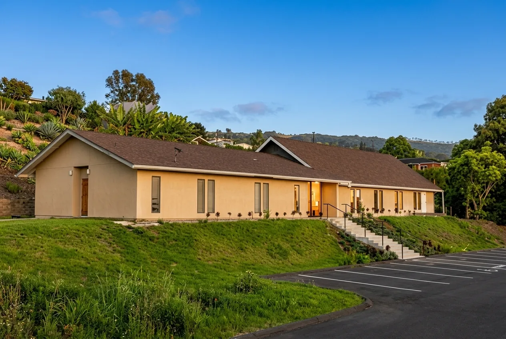

About Us
Scroll to explore
Welcome to our ‘Ohana
We are a Christ-centered, Bible-based church family in Kona, sharing God’s love and hope with our community.
Wherever you are on your faith journey, you are welcome here.
Who We Are
The Seventh-day Adventist Church is a mainstream Protestant movement with more than 19 million members worldwide, including over one million in North America. Our mission is simple: to help people experience abundant life today and prepare for the soon return of Jesus Christ.
Adventists joyfully look forward to that promised day when Jesus will come again, trusting His Word and living in hope.
We believe God cares deeply about every aspect of life. The way we live, eat, speak, work, care for one another, and care for the earth are all part of His plan for wholeness and joy. Families, children, talents, time, and resources are all precious in His sight.
Here in Kona, our church family seeks to live out this mission by:
- Worshiping together in spirit and truth
- Serving our neighbors with compassion
- Growing in faith through fellowship, study, and prayer
- Promoting health, wholeness, and hope for all
Whether you’ve been an Adventist your whole life or are just beginning to explore who Jesus is, you’ll find a place here with us. We invite you to join us for worship, community, and service as we walk together in faith.